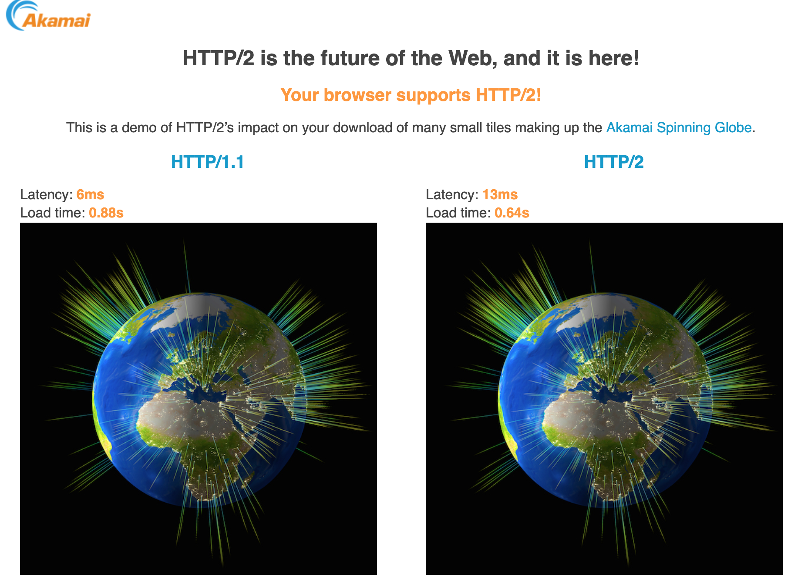
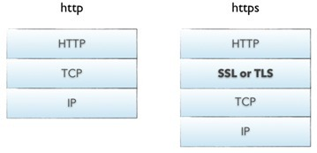
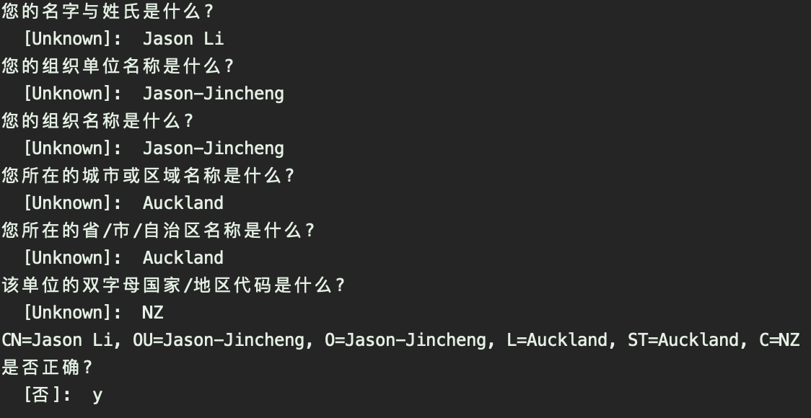
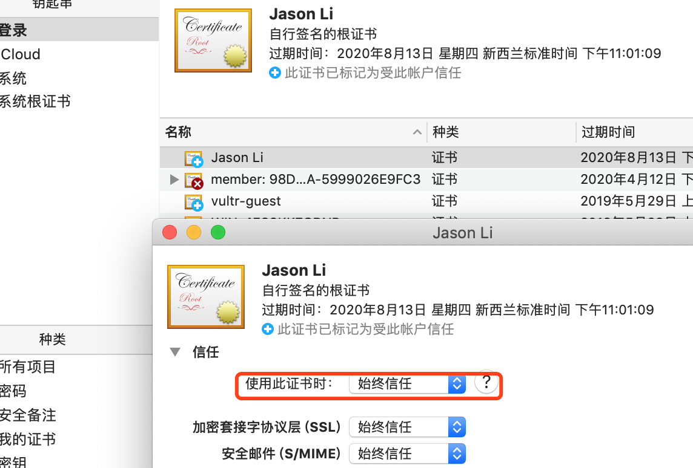

Nowadays, the common scenario for high-performance secure encryption for enterprise applications is to support both HTTP and HTTPS.
This blog will show you how to support HTTP and HPPTS with Spring Boot. Some of the Spring boot’s web containers can already supports HTTP2, this example used Undertow.
Foreword
Nowadays, the common scenario for high-performance secure encryption for enterprise applications is to support both HTTP and HTTPS.
This blog will show you how to support HTTP and HPPTS with Spring Boot. Some of the Spring boot’s web containers can already supports HTTP2, this example used Undertow.
What’s HTTP2?
From the WIKIPEDIA: HTTP/2 (originally named HTTP/2.0) is a major revision of the HTTP network protocol used by the World Wide Web. It was derived from the earlier experimental SPDY protocol, originally developed by Google. HTTP/2 was developed by the Hypertext Transfer Protocol working group httpbis (where bis means “second”) of the Internet Engineering Task Force. HTTP/2 is the first new version of HTTP since HTTP 1.1, which was standardized in RFC 2068 in 1997. The Working Group presented HTTP/2 to IESG for consideration as a Proposed Standard in December 2014, and IESG approved it to publish as Proposed Standard on February 17, 2015. The HTTP/2 specification was published as RFC 7540 in May 2015.
Why HTTP2?
Let’s see the Akamai Demo from https://http2.akamai.com/demo

We can see the load speed of HTTP2 is faster, but the latency is longer, that’s interesting, because reducing latency is a big feature of HTTP2, maybe depend on the network quality. Anyway, faster is good.
What’s HTTPS?
Let’s dig into SSL first. SSL (Secure Sockets Layer) is a security protocol that provides security and data integrity for network communications, SSL is working at the transport layer. SSL can be divided into 2 layers: SSL Record Protocol, which is built on a reliable transport protocol such as TCP, and support the high-level protocols to do some basic work such as data encapsulation, compression, and encryption; SSL handshake protocol, which is built on the SSL record protocol, used to authenticate the identity, negotiate the encryption algorithm, exchange the encryption key before the actual data transmission begins.
We use HTTPS to implement SSL, HTTPS is a security-oriented HTTP channel. Simply speaking, it’s a secure version of HTTP. So the security foundation of HTTPS is SSL, but now we all use the TLS protocol(Transport Layer Security), which comes from SSL.

Why HTTPS?
HTTP is used for transfer data between Web servers and browsers, without any type of encryption. Attackers can get the message if they intercept the data, so HTTP is not suitble for the transmission of sensitive information. To solve this problem, we can use SSL protocol to verify the web servers and encrypt the data.
Here is the difference between HTTP and HTTPS:
- HTTPS needs to apply for certificate from CA, mostly need to charge.
- HTTP use the plain text transmission, HTTPS use SSL for encryption.
- HTTP and HTTPS use different type of connection, their port are not same, the former is 80, the latter is 443.
- HTTP is simple and no status, but HTTPS use SSL to verify the web servers and encrypt the data, which is more safer.
How to use HTTPS and HTTP2?
First of all, we can use Spring Boot and Embedded server to implement HTTPS, with the following steps: - Get a SSL certificate, buy or generate.
- Start up HTTPS in Spring Boot.
- Redirect HTTP to HTTPS.
Get a SSL certificate
There’s two way to get a certificate, generate with the JDK keytool command, or buy one from the authorized institution. This blog use the former. Generate Certificate for server
1
java-home/bin/keytool -genkey -alias undertow -keypass 123456 -keyalg RSA -keysize 1024 -validity 365 -keystore undertow.keystore -storepass 123456
After answering these questions, we can get the keystore:
Generate Certificate for client
1
java-home/bin/keytool -genkey -alias client -keypass 123456 -keyalg RSA -storetype PKCS12 -keypass 123456 -storepass 123456 -keystore client.p12
After same question we get the p12.
Make the server trust the client
We can not import the p12 directly, so we export it to a CER file with this command:1
java-home/bin/keytool -export -alias client -keystore /Users/lijc/Documents/src/cert/client.p12 -storetype PKCS12 -keypass 123456 -file /Users/lijc/Documents/src/cert/client.cer
We get a cer file now, then we can import it to the server’s certificate lib as a trust cer file, use this command:
1
java-home/bin/keytool -import -v -file /Users/lijc/Documents/src/cert/client.cer -keystore undertow.keystore
Then we can use list command to see the server’s lib, we can find there’s two cer file, one server cer, one trusted client cer.
1
java-home/bin/keytool -list -v -keystore /Users/lijc/Documents/src/cert/undertow.keystore
Make the client trust the server cer
We must import the server cer into the brower’s trust institution list, because it’s a two-way authentication.
First we export the server’s keystore into a cer file:1
java-home/bin/keytool -list -v -keystore /Users/lijc/Documents/src/cert/undertow.keystore
Then we can import cer into Google browser:
- Settings - Manage Certificate
- Double click server.cer, default untrust
- Make the server cer always trust
Start up HTTPS&HTTP2 in Spring Boot
Copy undertow.keystore to Spring Boot’s resource floder, then configer this in application.properties:1
2
3
4
5
6
7
8
9
10server.http2.enabled=true
server.servlet.context-path=/blog
custom.server.http.port=8080
server.port=8443
server.ssl.key-store=classpath:undertow.keystore
server.ssl.key-store-password=123456
server.undertow.worker-threads=20
server.undertow.buffer-size=512
server.undertow.io-threads=2
- Settings - Manage Certificate
This will make undertow listening 8443 port, you only can visit website with “https://“ but not “http://“.
Redirect HTTP to HTTPS
We can do it with these code:1
2
3
4
5
6
7
8
9
10
11
12
13
14
15
16
17
18
19
20
21
22
23
24
25
26
27
28
29
30
31
32
33
34
35
36
37
38
39
40
41
42import org.springframework.beans.factory.annotation.Value;
import org.springframework.boot.web.embedded.undertow.UndertowServletWebServerFactory;
import org.springframework.boot.web.servlet.server.ServletWebServerFactory;
import org.springframework.context.annotation.Bean;
import org.springframework.context.annotation.Configuration;
import io.undertow.Undertow;
import io.undertow.servlet.api.SecurityConstraint;
import io.undertow.servlet.api.SecurityInfo;
import io.undertow.servlet.api.TransportGuaranteeType;
import io.undertow.servlet.api.WebResourceCollection;
public class WebServerConfiguration {
("${custom.server.http.port}")
private Integer httpPort;
("${server.port}")
private Integer httpsPort;
public ServletWebServerFactory undertowFactory() {
UndertowServletWebServerFactory undertowFactory = new UndertowServletWebServerFactory();
undertowFactory.addBuilderCustomizers((Undertow.Builder builder) -> {
builder.addHttpListener(httpPort, "0.0.0.0");
// Open HTTP2
builder.setServerOption(UndertowOptions.ENABLE_HTTP2, true);
});
undertowFactory.addDeploymentInfoCustomizers(deploymentInfo -> {
// HTTP Redirect to HTTPS
deploymentInfo.addSecurityConstraint(new SecurityConstraint()
.addWebResourceCollection(new WebResourceCollection().addUrlPattern("/*"))
.setTransportGuaranteeType(TransportGuaranteeType.CONFIDENTIAL)
.setEmptyRoleSemantic(SecurityInfo.EmptyRoleSemantic.PERMIT))
.setConfidentialPortManager(exchange -> httpsPort);
});
return undertowFactory;
}
}